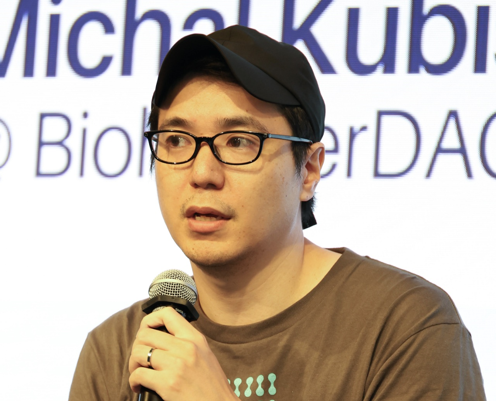
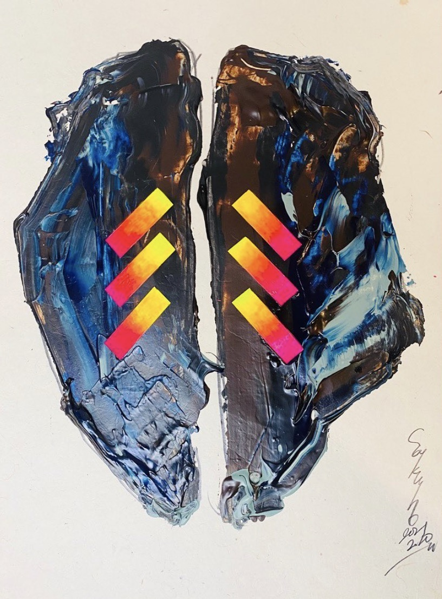

2026/10
- 濱田がリーダーを務める Persona Lab が開発するAIパートナープラットフォーム ClanExe の正式版の提供を開始しました。プレスリリース

Neuroscience · NeuroAI · Open Science
濱田太陽
株式会社アラヤ リサーチチームリーダー
システム神経科学・認知神経科学、Ph.D. (OIST)
“Per aspera ad astra”
About
株式会社アラヤで、好奇心の神経メカニズムについて研究しています。沖縄科学技術大学院大学 (OIST) の神経計算ユニット（指導教員: 銅谷賢治 教授）で Ph.D. を取得し、2019年8月からアラヤで働いています。

“transfer 05”
アーティスト 伊藤咲穂 作
Roles
News
Research
Projects
2026 – 2027
研究の自動化、研究資金の届け方、AI時代の科学と社会について、神田元紀教授・Brandon Possin氏・鈴木健氏に聞き手として話を伺う動画シリーズ。2026年11月10日より公開。
2024
国連大学で2日間開催、参加合計304名。ディレクター・イベント企画・運営代表として参加しました。
2023 –
分散型システムを通じて研究者や研究組織を支援するコミュニティハブ。クラウドファンディングは史上最速の5時間43分で目標達成。
2026
多元的社会はAIを受容できるか。社会の側はどう変わらなければならないのかを問いました。
2019 – 2025
意識研究に関わる人たちに向けた東京のハブ。29回のトークを運営し、登録者は2000名を超えました。
2024
Ethereum Foundation との共催で東京大学福武ホールにて開催。イベント企画メンバーの一人として参加しました。
2022 – 2024
「科学を再考する」をコンセプトに、サイエンスをメタな視点で紹介・考察するポッドキャスト番組。
Persona Lab
Published
Essays
E-mail: gutenmorgen172 [at] gmail.com